| 词 | 大白话 |
|---|---|
| 判分器 / verifier | 阅卷老师。看完 agent 交的活，给出 0 或 1。它自己也会犯错。 |
| 账套 | 一套完整的公司账目。我们的实验材料。干净的账套 = 本来没问题的账。 |
| 算子 | 「做手脚」的程序。往干净账套里亲手塞一个已知错误，于是我们事先就知道正确答案。 |
先问自己：一场考试里，「判卷老师自己看错了」这件事，归谁管？
答案是——没人管。出题的不管判分，管判分的只负责把程序跑完，跑考务的只管流程。

但没有人检查判分器本身对不对。
J = 1 − 误报 − 漏报 J=0 等于瞎猜，J<0 比瞎猜还糟要判断判分器判错没有，就得先知道正确答案。而正确答案通常得靠专家人工标注，很贵——同类工作烧过 1100 人时。
我们的办法正确答案不靠人标，靠会计恒等式由程序算出来。 ⇒ 零人工标注，边际成本约等于零（实测每题 0.35 毫秒）。
看懂「补哪一格」之后，第二个问题自然是：这件事现在做到哪一步了？ 下面这张图从上往下四步：造题 → 出答案 → 测判分器 → 看后果。 绿＝已完成黄＝进行中

我们原本宣称「会计域有 ≥4 档难度」。实测发现：四个算子违反的规则集合完全一样， 于是从参照答案那一侧看过去，四档难度被压成了一档——缺的不是算子，是核对规则。
已修好补齐 3 条规则 + 2 个算子，现在 4/4 分离；
验收脚本 run_f4_acceptance.py 报 PASS：干净账套 0/600 误报、7/7 规则全部用上、6/6 两两可分。
花的是约 3 小时和零 LLM 成本，换掉的是 $8–12 打在退化数据上的风险。
| 结论 | 数字 | 为什么反直觉 |
|---|---|---|
| 闸门通过 | flash 漏报 0.500（CI 0.423–0.577，n=160） pro 漏报 0.380（CI 0.291–0.478，n=100） |
两个区间都远高于跑前写死的 0.20 阈值 ⇒ 方向成立 |
| 更强的模型反而更危险 | pro 判别力 J = −0.180（比瞎猜还糟） flash 判别力 J = +0.500（正常） |
买更强的判分器 ≠ 买到更好的训练信号 |
| 原因不是看不见，是乱报 | pro 检测层漏报 0.494→0.070（变好） 归因层 0.012→0.333（变差） 误报率 0.000→0.800 |
能力提升只买到「检测」，没买到「归因」 |
| 误报率才是杀手 | 误报率=0 时，漏报率涨到 100% 也不翻转训练方向 | 社区直觉以为是漏报害的，其实是误报在污染奖励 |
| 第三种失效：静默停摆 | 66–100% 的组答案为全同（σ=0） | GRPO 直接跳过这些组，不报任何错，训练悄悄停摆 |
A0 是当前的主实验（4 档难度 × ≥6 个模型，$8–12）。但在投这笔钱之前，建议先花 $2 把上面那条钉不死的结论钉死。

还有一个待定的可选项 F5：给「账外账」也补一条专属核对规则。倾向先不补—— 它不影响四档可区分性，等 A0 结果出来再定。
| 词 | 一句话 |
|---|---|
| oracle / 核对规则 | 判断账目对错的规则。现在有 7 条（表账一致 / 期末递推 / 会计恒等式 / 折旧政策 / 累计折旧 / 跨期 / 分类）。 |
| DIC 差分隔离证书 | 「做手脚 前 与 后 之差」就是真值。⇒ 拿到正确答案的成本约等于零，零人工标注。 |
| 认定（审计认定） | 四种错误类型：完整性 / 截止性 / 计价 / 分类列报。四档难度就来自这四条。 |
| FNR 漏报率 | 有错没查出来。学科里它叫检查风险（PCAOB AS 1101）。 |
| FPR 误报率 | 没错却报错。真正污染奖励的是它。 |
| J 判别力 | J = 1 − FPR − FNR，就是 Youden's J（1947）。J=0 ⟺ 瞎猜；J<0 叫 reversed discrimination。 |
| arm（提示档位） | 我们「帮判分器多少」的三档：A 原始账 / B 预先算好 / C 再给核查清单。取最宽松的 C 是对自己不利的一侧。 |
| 零方差退化 | 一组 rollout 答案全同（σ=0），没有梯度，训练停摆但不报错。 |
| 误解 | 事实 |
|---|---|
| ALE 和 ALE-Bench 是一家的 | ❌ 完全无关。Berkeley RDI vs Sakana×AtCoder |
| Harbor 是另一个 benchmark | ❌ 它是 runner / 框架；benchmark 是 Terminal-Bench 2.0 |
| 我们让"埋雷"更真实 | ❌ 变异体有效性已被做透（87.98% vs 41.64%） |
| 我们发现了"训练方向翻转" | ❌ 定理已证。只能说：实测到判别力跨过了 d′=0 |
| 四档难度我们早就有 | ⚠️ 算子层有，参照层原被压平成一档；F4 修复后才 4/4 分离 |
v 本来被标成 「可选项」；